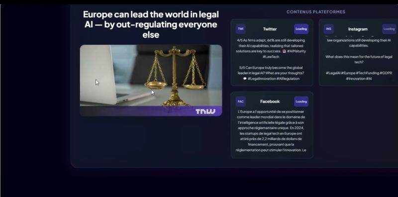
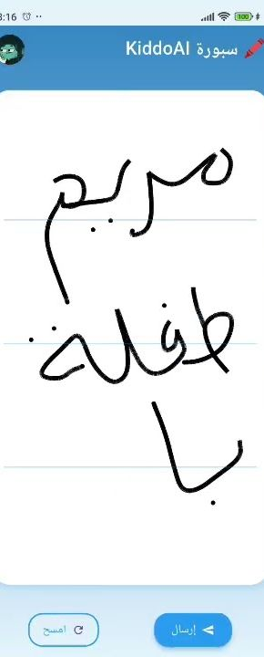
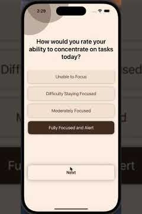
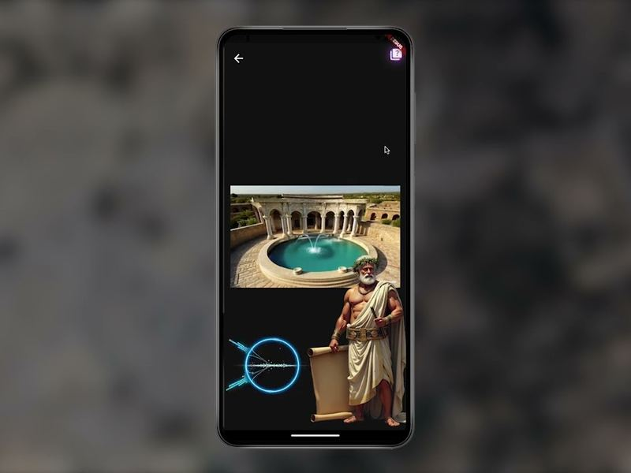

Available now · Berlin · open to relocation across Europe
I build systems that decide on their own, inside limits a human sets.
Backend, full-stack and applied AI. Most recently at recash in Munich, as the only engineer on the platform’s AI layer, where I shipped an autonomous deal engine end to end.
-
Score inventory
200 products scored nightly for inventory health.
-
Negotiate price
61 pricing opportunities queued, none manually initiated.
-
A human decides
The loop halts. Nothing reaches the catalogue until a person has decided, and the decision is written onto the record it concerns.
-
Distribute deals
Live deals matched to the buyers most likely to want them.
-
Learn from the outcome
Weights adjust nightly inside fixed safety bounds. Size-fit moved 0.10 → 0.42 on its own, and never overwrote a value a person set.
Runs unattended A person decided
A system can run all night on its own. It still stops at a person before anything is final.
That is the line I design to. SmartPilot scores, negotiates and learns without supervision — and writes nothing to the catalogue until someone has decided, on the record it concerns. Autonomy and oversight are separate problems, and treating them that way is what makes either one safe to ship.
Achref Lajmi, on building SmartPilot at recash
02 Work
Where I Have Shipped
Four roles, each one building something that went into use rather than a prototype that stopped at a demo.
-
Feb — Jul 2026
recash
Software Engineering Intern, end-of-studies project
Circular Service GmbH · Munich
Sole developer of the platform’s AI layer in a nine-person startup. 24 sprints, continuous deployment, CTO code review. I shipped SmartPilot: an autonomous deal engine closing a four-stage loop.
- 200 products scored nightly; 61 pricing opportunities queued with no manual initiation.
- Three-signal hybrid semantic search — pgvector embeddings, PostgreSQL full-text and keyword ranking — shipped to production, returning relevant results for queries sharing no literal words with the listing.
- Behavioural recommendation engine with a per-buyer taste vector and a 25–35% discovery fraction under an enforced brand-diversity floor; later inverted to match live deals to the buyers most likely to want them.
- Learning loop adjusting matching weights nightly within fixed safety bounds — moved the size-fit weight from 0.10 to 0.42 autonomously, never overwriting a human-set value.
- Agentic AI assistant, Claude via the Vercel AI SDK, grounded in live data through a fixed, user-scoped tool menu.
- Production eBay connector; code-complete Shopify Admin and Amazon SP-API integrations.
- Next.js
- TypeScript
- PostgreSQL
- Supabase
- Drizzle ORM
- pgvector
- Trigger.dev
- Claude API
- Vercel
Company code, not on my GitHub. I can walk through it in an interview.
-
Jul — Sep 2025
MASMEDIA
AI Software Developer Intern
ESPRIT Tech · Tunis
Sole developer of MASMEDIA AIDITOR, an AI journalism platform, across two modules.
- PARROT, real-time livestream coverage: Streamlink audio to AssemblyAI streaming transcription to GPT-4 key-moment detection to multi-platform content generation. 3.2 s transcription latency, 84% detection precision.
- Validated live: 8 of 8 announcements on an Apple keynote, a 73% cut in coverage time, and 15 of 16 on Google I/O.
- SWALLO, a configurable scraper over 30 tech sources with GPT-4 relevance filtering: 1,247 articles in a seven-day run at 84% precision.
- Event coverage dropped from 4h30 to 1h20; daily monitoring from 4 hours to 12 minutes; three people per live event to one.
- Social publishing over OAuth 2.0 with encrypted token storage; a response cache cut GPT-4 spend 35%.
- 95 tests, 88% coverage with Jest, Supertest and in-memory MongoDB.
- NestJS
- TypeScript
- MongoDB
- GPT-4
- AssemblyAI
- FFmpeg
- Docker
-
Jun — Jul 2024
FinConnect
Full-Stack Developer Intern
Financial Solutions · Tunis
Internal ticketing platform: JWT auth, role-based access control across agent, manager and admin, filtering, reporting, PDF export and in-app chat. Scrum, peer review.
- Angular
- Spring Boot
- PostgreSQL
Private company repository.
-
Jun — Jul 2022
SOFTParadigm
Web Development Intern
Tunis
Backend REST endpoints and Angular UI components; refactored existing modules. First professional role.
03 Projects
Things I Built
-
Flagship
SmartPilot
An autonomous deal engine at recash closing a four-stage loop: nightly inventory health scoring, AI-mediated price negotiation, targeted deal distribution, and a feedback-driven learning loop. Autonomy and human oversight stay separable concerns — no price reaches the catalogue without a human decision stamped on the record it concerns.
- Scored nightly
- 200
- Deals queued
- 61
- Weight moved
- 0.100.42
- Next.js
- pgvector
- Drizzle
- Trigger.dev
- Claude API
Company code. Not public — I can walk through it in an interview.
-

AI Journalism
MASMEDIA AIDITOR
Real-time livestream coverage and a configurable scraper over 30 tech sources. 3.2 s transcription latency at 84% detection precision; 1,247 articles in a seven-day run.
-

Education
Kiddo AI
An educational app for six-year-olds: an AI tutor speaking Tunisian Arabic, cloned voice synthesis and avatar personalisation. Five-person academic team; I was principal author of the Flutter client’s second version — MVVM restructure, service layer and voice pipeline, roughly 3,100 of its 4,400 lines.
-

iOS
MoodyMap
A SwiftUI study planner: hand-built RFC 2388 multipart image upload for server-side emotion detection, camera and photo-library permission bridging, concurrent home-screen loading with
withTaskGroup, and LLM study-plan prose parsed into a checkable task list. 10 screens, 18 endpoints, about 5,000 lines of Swift. -

Hackathon
SUF’ESS
A 24-hour hackathon MVP: location-based cultural storytelling with prototype AI guided tours, built in FlutterFlow with RAG, 3D and geolocation.
04 Skills
What I Work In
Backend
TypeScript, Node.js, NestJS, Next.js server actions & API routes, Java, Spring Boot, REST, Zod, JWT/RBAC
Data
PostgreSQL, pgvector, Supabase, Drizzle ORM, Prisma, MongoDB, Row-Level Security
Frontend
React, Next.js, Angular, Tailwind, Flutter, SwiftUI
Applied AI
LLM integration, RAG, tool-calling agents, embeddings, hybrid semantic search, recommender systems, STT/TTS
Infrastructure
Docker, Git/GitHub, CI/CD, Turborepo + pnpm monorepos, Trigger.dev, Vercel, Sentry, PostHog, Jest
Languages
Arabic (native), French (C1), English (C1, TOEFL iBT), German (A1, learning)
05 Education
Where I Studied
Diplôme d’Ingénieur, Computer Science
Sep 2021 — Sep 2026 · ESPRIT, Tunis
Web & mobile. Mention Très Bien. Master level, EQF 7.
Exchange Semester, Computer Science
Oct 2025 — Mar 2026 · Philipps-Universität Marburg
Germany.
- AWS Academy Cloud Foundations
- NVIDIA Generative AI with Diffusion Models
- NVIDIA Applications of AI for Predictive Maintenance
06 Contact
Let’s Talk
I’m looking for full-time backend, full-stack or applied-AI work, and I’m available now.
- achreflajmi1@gmail.com
- Phone
- +49 155 6584 8284
- GitHub
- github.com/achreflajmi
- Based in
- Berlin, Germany
- Open to
- Relocation across Europe